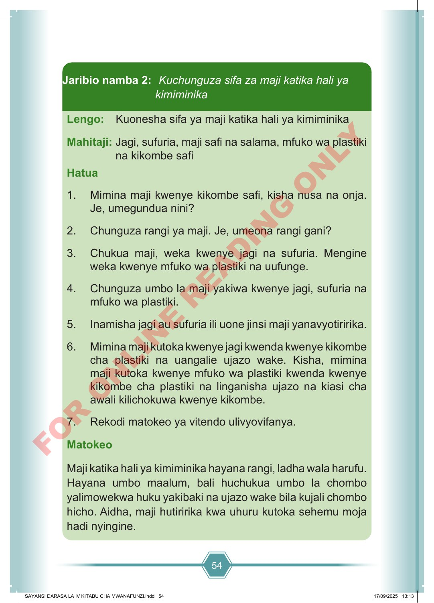

54 Lengo: Kuonesha sifa ya maji katika hali ya kimiminika Mahitaji: Jagi, sufuria, maji safi na salama, mfuko wa plastiki na kikombe safi Hatua 1. Mimina maji kwenye kikombe safi, kisha nusa na onja. Je, umegundua nini? 2. Chunguza rangi ya maji. Je, umeona rangi gani? 3. Chukua maji, weka kwenye jagi na sufuria. Mengine weka kwenye mfuko wa plastiki na uufunge. 4. Chunguza umbo la maji yakiwa kwenye jagi, sufuria na mfuko wa plastiki. 5. Inamisha jagi au sufuria ili uone jinsi maji yanavyotiririka. 6. Mimina maji kutoka kwenye jagi kwenda kwenye kikombe cha plastiki na uangalie ujazo wake. Kisha, mimina maji kutoka kwenye mfuko wa plastiki kwenda kwenye kikombe cha plastiki na linganisha ujazo na kiasi cha awali kilichokuwa kwenye kikombe. 7. Rekodi matokeo ya vitendo ulivyovifanya. Matokeo Maji katika hali ya kimiminika hayana rangi, ladha wala harufu. Hayana umbo maalum, bali huchukua umbo la chombo yalimowekwa huku yakibaki na ujazo wake bila kujali chombo hicho. Aidha, maji hutiririka kwa uhuru kutoka sehemu moja hadi nyingine. Jaribio namba 2: Kuchunguza sifa za maji katika hali ya kimiminika SAYANSI DARASA LA IV KITABU CHA MWANAFUNZI.indd 54 SAYANSI DARASA LA IV KITABU CHA MWANAFUNZI.indd 54 17/09/2025 13:13 17/09/2025 13:13 F O R O N L I N E R E A D I N G O N L Y